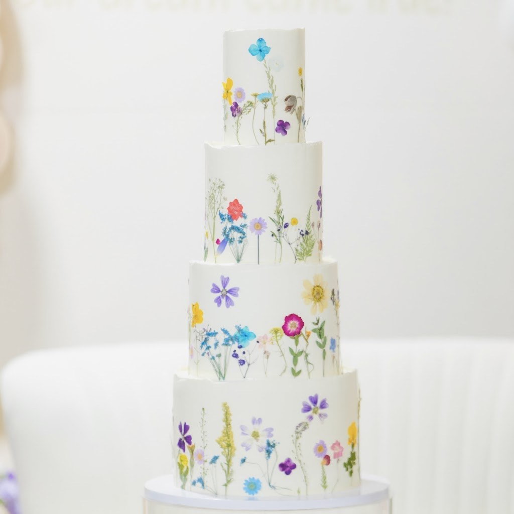
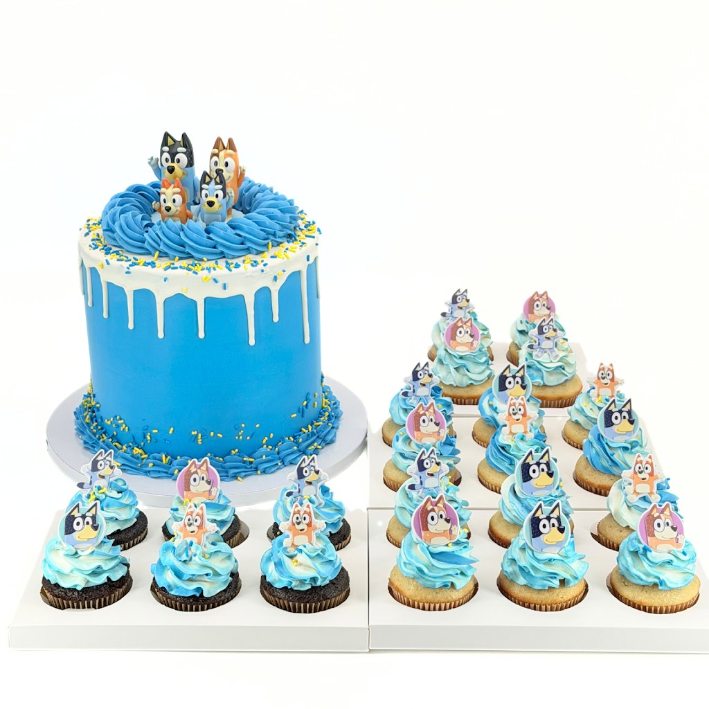
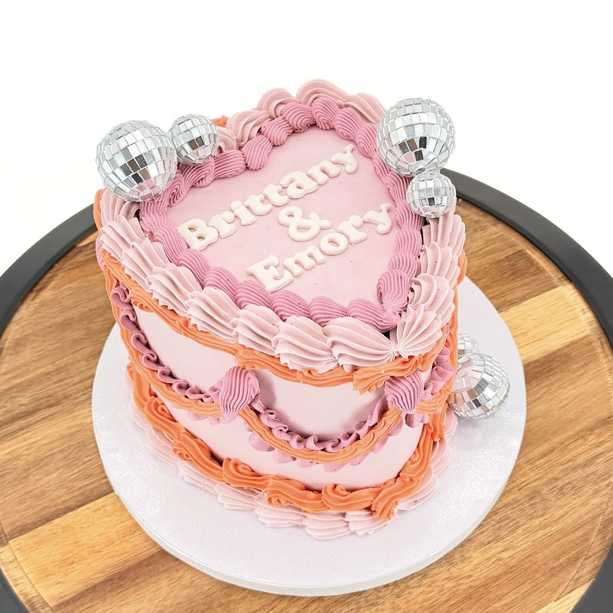

Custom Cakes and Cupcakes, Austin TX
Tili's Bakery
Custom cakes, cupcakes, and desserts in Austin for weddings, birthdays, baby milestones, and bachelorettes. You dream it, we bake it.
Launched May 2024. You dream it, we bake it.

About
Tili's Bakery is a bakery at 6916 Midlothian Dr in Austin, Texas, launched in May 2024. The bakery makes custom cakes, cupcakes, and desserts for weddings, birthdays, baby milestones, and bachelorettes. Signature flavors are vanilla blueberry, vanilla biscoff, vanilla oreo, and vanilla strawberry, plus the Tili's signature box. The bakery's own words: you dream it, we bake it. Hours are Monday through Friday, 8:00 AM to 5:00 PM; Saturday, 8:00 AM to 4:00 PM; Sunday closed. Call (737) 336-1152 to place an order.
Cakes and desserts
Custom cakes
Custom cakes for weddings, birthdays, baby milestones, and bachelorettes.
Cupcakes
Cupcakes.
Wedding cakes
Custom cakes for weddings.
Birthday cakes
Custom cakes for birthdays.
Baby milestone cakes
Custom cakes for baby milestones.
Bachelorette desserts
Desserts for bachelorettes.
Vanilla blueberry
A signature flavor.
Vanilla biscoff
A signature flavor.
Vanilla oreo
A signature flavor.
Vanilla strawberry
A signature flavor.
Tili's signature box
The Tili's signature box.
Order a cake
Orders are taken by phone, through the website form, or on Instagram. Find the bakery on Facebook at Tili's Bakery and on Instagram at tilisbakery. Call (737) 336-1152 to place an order.
Gallery


All three photos are real photos from the business's Google Maps listing. They show a four-tier white wedding cake with pressed flowers, a blue drip cake with matching blue and white cupcakes, and a pink heart-shaped cake reading Brittany and Emory in gold, with silver disco balls.
Visit
Address: 6916 Midlothian Dr, Austin, TX 78754
Hours: Monday through Friday, 8:00 AM to 5:00 PM; Saturday, 8:00 AM to 4:00 PM; Sunday closed.
Phone: (737) 336-1152
Contact
Tili's Bakery serves Austin, TX. Questions? Call (737) 336-1152.